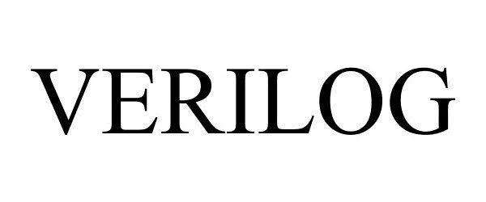
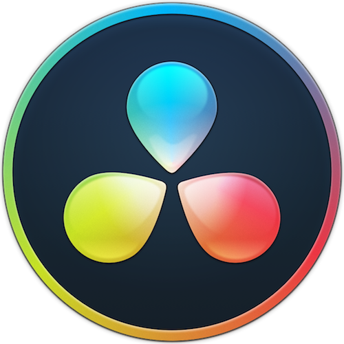
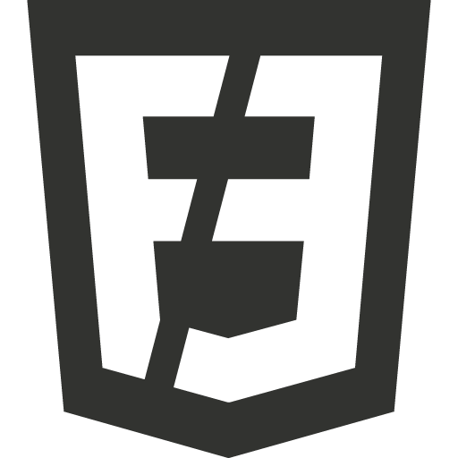

My Projects
Here are some projects that showcase my skills, creativity, and passion for technology and development.
Developer Portfolio
A modern responsive personal portfolio website created using HTML and CSS with smooth layouts and aesthetic design.
View Project
Python Mini Projects
Collection of beginner-friendly Python projects focused on logic building and problem solving.
View Project
Verilog Logic Design
Digital logic implementation using Verilog including gates, testbenches, and simulation concepts.
View Project
Video Editing Showcase
Creative reels, cinematic edits, transitions, and aesthetic visual storytelling projects.
View Project
Frontend UI Designs
Multiple frontend interfaces designed with responsive layouts and modern UI concepts.
View ProjectCreative Digital Content
Social media graphics, branding ideas, and aesthetic content creation projects.
View Project